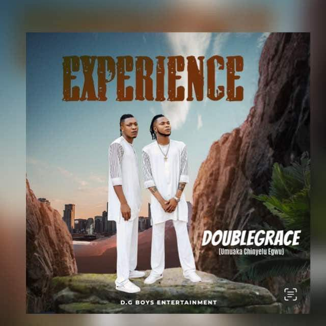

Download:DoubleGrace-Doublegrace-feat-Flavour-Amala_Ubor
A Nigerian Highlife Duo singer and songwriter,DoubleGrace comes through with a sensational music “Amala Ubor” featuring Ijele Africa Flavour.
A Nigerian Highlife Duo singer and songwriter,DoubleGrace comes through with a sensational music “Amala Ubor” featuring Ijele Africa Flavour.